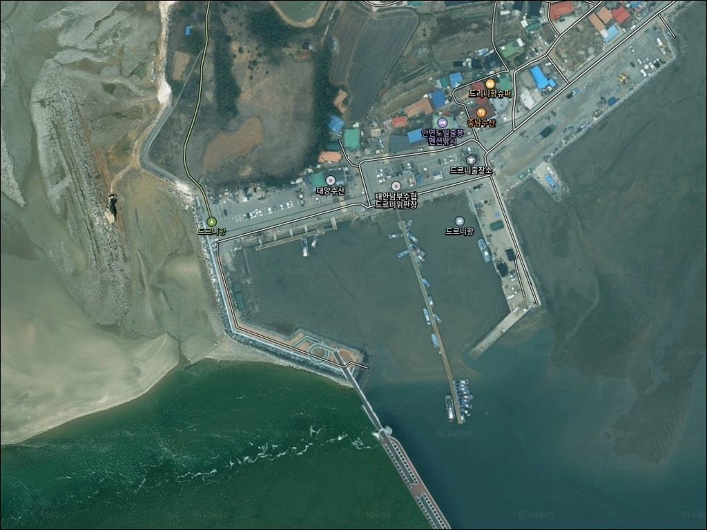
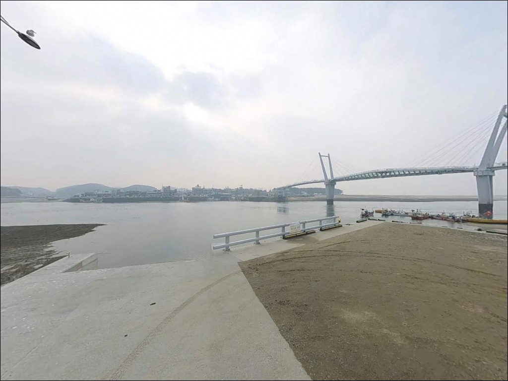
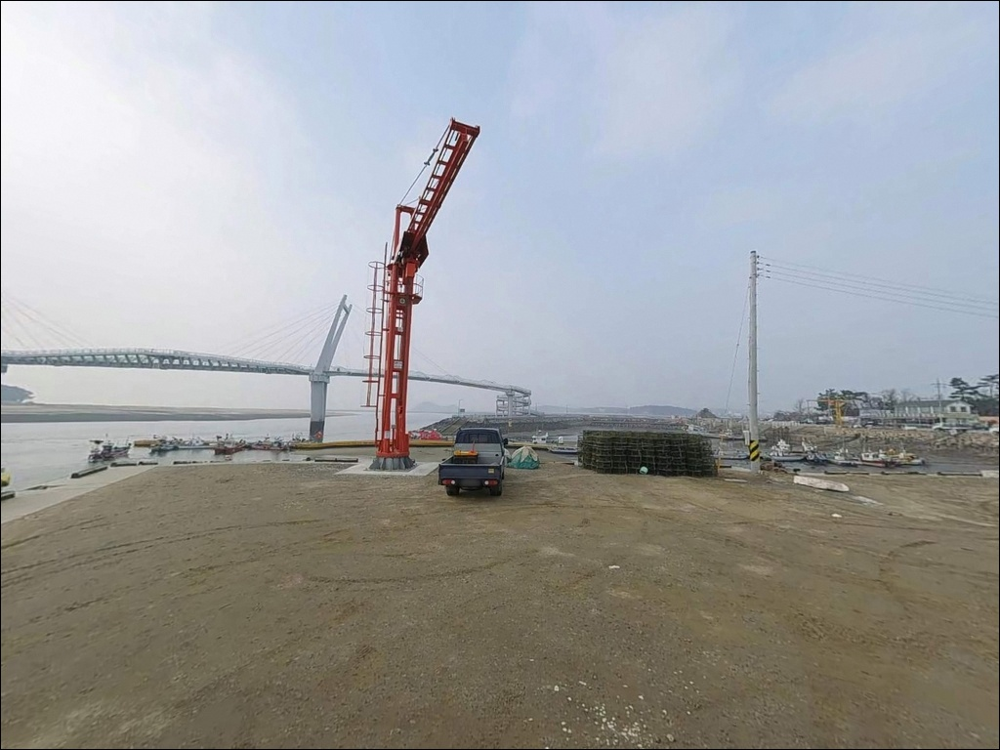
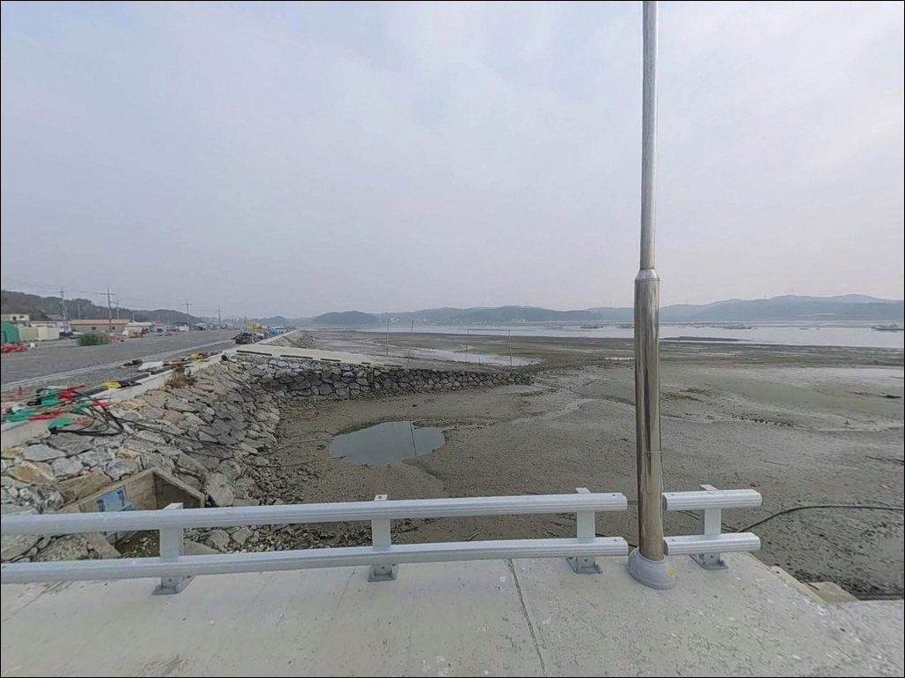
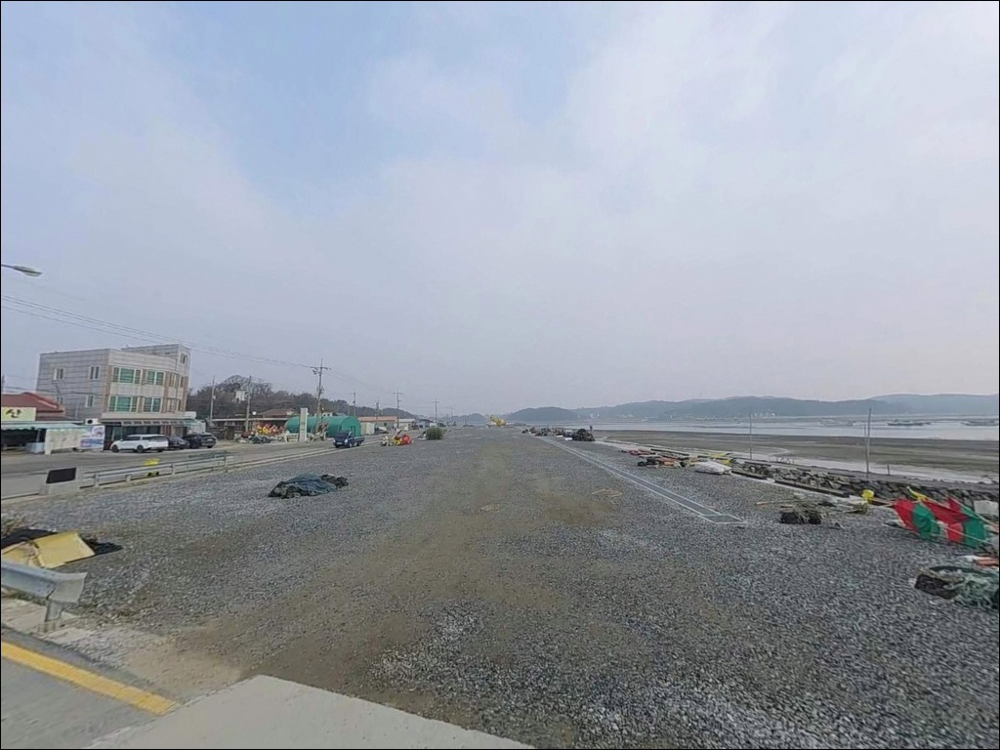
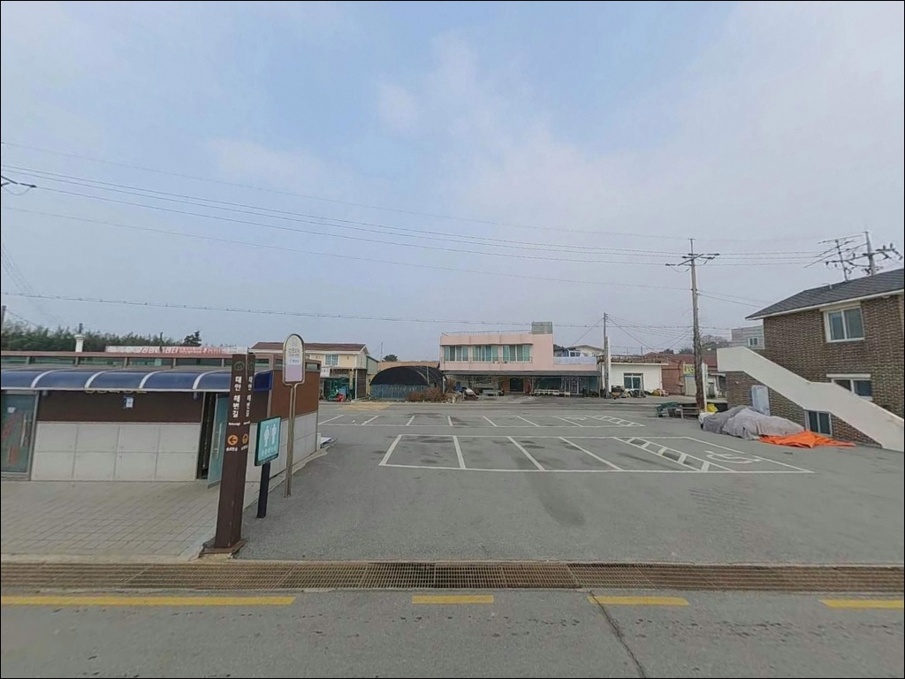
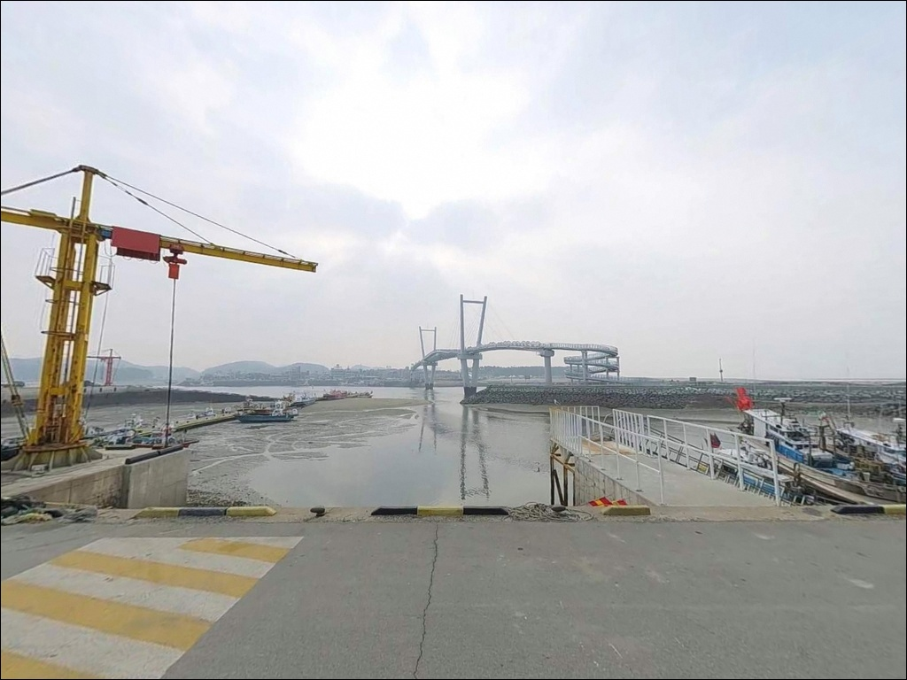
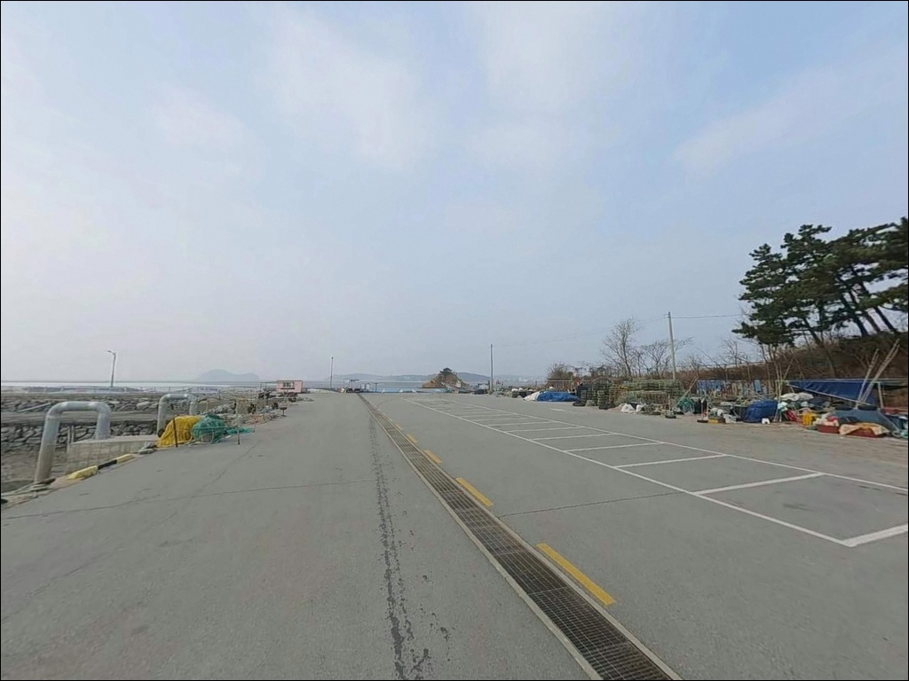
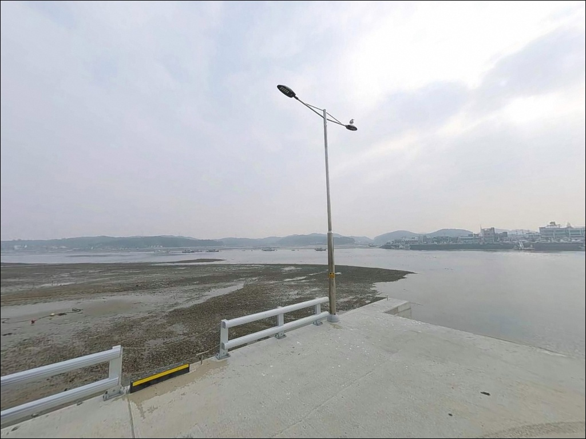

드르니항, 충남 태안군 한적한 해안 차박, 낚시 장소


포인트 안내
드르니항
충남 태안군 남면 신온리 802-4
드르니항을 찾는 낚시인이 가장 많이 놓치는 판단은
시즌과 물때를 함께 계산하지 않는 것입니다.
주꾸미는 금어기가 있는 어종이고,
서해 만 안쪽 구조 특성상 간조 시 수심이 크게 빠져
타이밍을 맞추지 않으면 낚시 자체가 어려워집니다.
충남 태안군 남면 신온리에 자리한 드르니항은
'들르다'라는 순우리말에서 이름을 딴 소형 어항으로,
안면도 백사장항과 해상인도교로 연결된 구조입니다.
한국관광공사 공식 여행정보에 주꾸미·노래미·우럭을 대상으로
연중 낚시객이 찾는 항으로 명시되어 있습니다.
이 글은 드르니항의 진입 여건, 물때 기반 낚시 방식,
차박 실용성을 중심으로 정리합니다.
조황 단정이나 특정 어종 보장은
이 글의 범위에 포함되지 않습니다.

1. 진입 동선과 포인트 접근성
서해안고속도로 홍성IC를 기점으로
천수만방조제를 지나 77번 국도를 경유하는 것이
드르니항 접근의 기본 동선입니다.
한국관광공사 공식 안내에서 확인된 경로이며,
전 구간 포장도로로 이어져 있습니다.
드르니항은 소형 포구 구조입니다.
항 진입로 폭이 넉넉하지 않은 편이어서
캠핑카나 대형 SUV라면 출발 전에
위성지도로 진입로와 회차 공간을 먼저 확인하고 가는 편이 안전합니다.
회차가 어려운 상황에 대비해
후진 진출 여부도 미리 가늠해 두는 것이 좋습니다.
주차는 태안남부수협 주변 공터나
꽃게다리 진입부 인근 공간을 활용하는 방식이 일반적입니다.
태안군 관광 정보에 주차 가능으로 안내되어 있으나,
성수기·주말에는 주차 경쟁이 있을 가능성이 있어
이른 시간 진입이 유리합니다.

2. 차박 환경과 야간 체류 여건
드르니항은 해상인도교(꽃게다리)로 인해
관광지 성격이 있는 항구입니다.
야간에도 꽃게다리 경관 조명이 켜지는 구조라
항 주변의 밝기는 어느 정도 확보되는 편이지만,
꽃게다리를 찾는 관광객 유입이 있어
완전히 한적한 차박 분위기는 아닌 경우가 많습니다.
주말·성수기 야간에는 유동 인구가 있을 가능성이 있습니다.
방파제 끝단 쪽은 인도교 조명 범위를 벗어나는 구간이 있어
야간 낚시 시 개인 헤드랜턴이 필수입니다.
만 안쪽 구조라 파도 영향은 비교적 적은 편이지만,
서해 특성상 바람이 예고 없이 강해지는 경우가 있어
기상 확인은 당일 아침 다시 한번 하는 편이 좋습니다.
차박을 메인으로 삼기에는 공간 여유가 단출한 편이며,
낚시 후 하룻밤 머무는 목적이라면
주차 공간 확보 여부를 현장에서 먼저 판단해야 합니다.
한적한 차박 분위기를 원한다면
같은 태안 해안선의 마검포항이나 곰섬 방면이
대안으로 검토할 만합니다.


3. 주변 편의시설 및 인프라 현황
드르니항 인근에는 주꾸미샤부샤부 전문 식당이
확인되어 있어 낚시 전후 식사 수단은 갖춰진 편입니다.
항 주변에 편의점도 운영되고 있는 것으로 확인되나,
영업 시간과 구체 위치는 현장에서 확인하는 편이 확실합니다.
드르니항 관광지 내 공중화장실이 있는 것으로 확인됩니다.
다만 야간 운영 여부는 현장에서 별도로 확인해야 하며,
소형 포구 특성상 장시간 체류라면
식수·간식·비상약품은 출발 전 완비하고 가는 편이 기본입니다.
해상인도교(꽃게다리)를 건너면 백사장항 쪽으로 이동할 수 있지만,
인도교는 도보 전용입니다.
차량으로 백사장항 상권에 접근하려면
안면대교를 경유해야 하므로 수 킬로미터의 우회가 생깁니다.
낚시 소품이나 추가 채비가 필요하다면
백사장항 방면 상권 위치를 사전에 파악해 두는 편이 효율적입니다.

4. 방문 전 반드시 챙겨야 할 준비사항
드르니항 방문에서 가장 먼저 확인할 것은 주꾸미 금어기입니다.
해양수산부 기준 매년 5월 11일부터 8월 31일까지는
주꾸미를 포획할 수 없으며,
피크 시즌은 금어기 해제 이후인 9월과 10월에 집중됩니다.
금어기를 확인하지 않고 방문하면
메인 대상어 자체를 노릴 수 없게 됩니다.
물때 확인도 필수입니다.
서해 만 안쪽 구조 특성상 간조 시 수심이 크게 빠지며,
들물이 시작되어 수심이 살아나는 타이밍을 기준으로
입장 시각을 잡는 것이 이 포인트의 기본 전략입니다.
바다타임에서 태안 남면 기준 물때를 출발 전에 확인해 두는 편이 좋습니다.
주꾸미 워킹 에깅을 주 목적으로 한다면
왕눈이 에기와 스테 채비를 넉넉히 준비합니다.
뻘 바닥 특성상 밑걸림이 생길 수 있어
여분 채비는 넉넉하게 가져가야 하며,
야간 입장 시 헤드랜턴과 구명조끼는 기본 장비입니다.
서해 방파제 포인트에서는 간조 시 수심이 크게 빠지는 특성으로 인해,
들물 전후 타이밍이 낚시 성과를 결정하는 핵심 조건입니다.

5. 지형 기반 낚시 여건 분석
드르니항은 짧은 방파제와 내항이 결합된 소형 포구 구조입니다.
안면도 백사장항과 마주보는 만 안쪽에 위치해
외해의 직접적인 파도 영향은 덜한 편이며,
그만큼 잔잔한 수면이 유지되는 구간이 많습니다.
바닥은 뻘과 자갈이 혼합된 지형으로 추정되는데,
이러한 환경은 주꾸미가 서식하기 좋은 조건에 해당합니다.
방파제 끝단 쪽으로 갈수록 수심이 조금 깊어지는 구간이
생길 가능성이 있어, 이 구간이 주요 낚시 자리가 됩니다.
해상인도교 교각 주변은 조류 흐름이 일부 형성될 가능성이 있어,
루어나 에깅 채비를 교각 근처 방향으로 던져보는 것도
탐색 가치가 있는 구간입니다.
서해 특성상 사리 전후에는 조류가 강해질 수 있어
물때 계산이 이 포인트에서 가장 중요한 변수입니다.
최신 조황은 가기 전에 꼭 검색해 보시기 바랍니다.
드르니항 방파제는 뻘과 자갈이 혼합된 바닥 지형으로
주꾸미가 서식하기 좋은 환경을 갖추고 있으며,
가을 시즌에 집중도가 높아지는 포인트입니다.


6. 물때 타이밍에 따라 달라지는 낚시 스타일
이 포인트에서 가장 많이 시도되는 방식은
주꾸미 워킹 에깅입니다.
뻘 바닥과 만 안쪽 구조가 주꾸미 에기 채비에 맞는 지형이며,
왕눈이 에기에 봉돌을 달아 바닥을 천천히 더듬는 스테 방식이 기본입니다.
금어기 해제 후 9~10월 가을 시즌이
집중도가 가장 높은 시기입니다.
원투낚시도 이 포인트 지형 조건에 잘 맞는 스타일입니다.
뻘·자갈 혼합 바닥에서 청갯지렁이를 미끼로 사용하면
노래미나 우럭, 붕장어를 기대해볼 수 있는 지형입니다.
들물이 시작되어 수심이 살아나는 타이밍에
채비를 방파제 끝단 방향으로 멀리 보내는 방식이
이 포인트에서 원투를 운용하는 기본 전략입니다.
방파제 외항 쪽 수중여 근처에서는
소형 지그헤드나 웜 채비로 우럭·노래미를 탐색하는
루어낚시도 시도해 볼 만합니다.
어떤 방식이든 물때 타이밍이 맞지 않으면
입질을 기대하기 어려운 서해 포인트 성격이므로,
낚시 방식보다 들물 시작 시각을 먼저 계산하고 입장하는 것이 우선입니다.

7. 대안 포인트와 플랜 B 동선
드르니항이 혼잡하거나 낚시 공간이 여의치 않을 경우
가장 먼저 고려할 곳은 백사장항 방파제입니다.
드르니항과 같은 태안 남면 권역에 있으며,
주꾸미·갑오징어 워킹낚시 포인트로 인지도가 높고
주변 시설도 더 잘 갖춰진 편입니다.
백사장항은 도보로는 꽃게다리를 건너면 닿을 수 있지만,
차량으로는 안면대교를 경유해야 하므로
실제 이동에는 수 킬로미터의 우회가 필요합니다.
드르니항을 먼저 확인하고
조황이 기대에 못 미칠 경우 백사장항으로 이동하는 동선이
이 권역에서 가장 효율적인 방식입니다.
같은 태안 남면에 위치한 마검포항도
원투낚시와 광어 루어 후기가 있는 대안 포인트입니다.
드르니항에서 남쪽으로 약 5km 거리에 있으며,
방문 전 최신 조황을 검색해
방문 순서를 미리 잡아두는 편이 헛걸음을 줄이는 방법입니다.

주꾸미 시즌에 타이밍 맞추면
드르니항이 달라 보입니다
가을 시즌, 들물 타이밍에 맞춰
주꾸미 워킹 에깅이나 원투낚시를 즐기는 낚시인이라면
드르니항의 뻘 바닥 지형과 만 안쪽 구조는
잘 맞는 조건입니다.
서해안고속도로 홍성IC에서 접근성이 나쁘지 않고,
공식 여행정보에서도 연중 낚시객이 찾는 포인트로 확인된 곳입니다.
반면 금어기를 확인하지 않고 찾아가거나,
물때 계산 없이 간조 시간대에 도착하면
어떤 채비를 써도 낚시 여건이 크게 달라집니다.
시즌 확인, 물때 계산, 진입로 사전 파악,
이 세 가지를 갖추고 간다면
드르니항은 서해 소형 포구 특유의 조용한 손맛을
기대할 수 있는 곳입니다.
한적한 차박보다 낚시 자체가 목적인 방문자,
또는 백사장항과 묶어 두 포인트를 함께 돌아보고 싶은 낚시인에게는
드르니항을 기점으로 꽃게다리를 연결하는 동선이
서해 가을 출조의 시작점이 될 수 있습니다.